English
EnglishNanoKVM Go Realtime Voice Chat Quick Start
Update history
| Date | Version | Author | Update content |
|---|---|---|---|
| 2026-08-05 | v1.0 | Liang Ziyue |
|
Realtime Voice Chat Quick Start
Voice Bridge Overview
Voice Bridge is a realtime voice bridge App that runs on NanoKVM Go. It forwards two-way audio between the controlled host's audio devices and a cloud realtime voice model, so a caller can talk to an AI assistant directly through a phone call.
In this example, Voice Bridge uses Qwen Audio Realtime. The caller's voice is sent from the controlled host to Qwen through NanoKVM Go, and the model's generated voice is sent back to the controlled host through the NanoKVM Go UAC2 virtual microphone. The App also shows transcripts for both sides on the device screen.
Caller phone -> controlled host call audio -> NanoKVM Go -> Qwen Audio Realtime
Caller phone <- controlled host call audio <- NanoKVM Go <- Qwen Audio Realtime
What You Can Build
Voice Bridge can be used to quickly build and verify:
- AI phone customer-service demos;
- realtime voice assistants and voice bots;
- call-test setups with live transcripts;
- prompt, voice, and realtime model validation workflows.
This guide only covers installing and running the official device-side App. You do not need to understand MCP, WebRTC, Opus, or audio resampling to try it. If you plan to replace the model, add a knowledge base or Agent, or customize the audio pipeline, first complete this quick start, confirm that the base workflow works, and then read the Realtime Voice Chat Technical Guide.
Final Result
After installation, open Voice Bridge from the NanoKVM Go Apps page, then start a phone call. The device screen shows the running status and transcripts:
Before You Start
Before installing the App, make sure that:
- NanoKVM Go is connected to the controlled host, and you can access its web interface;
- the NanoKVM Go system and application are updated to the latest versions;
- NanoKVM Go can access the internet to download App dependencies and connect to Qwen;
- the phone is connected according to the device requirements and can make calls normally;
- the controlled host can detect the NanoKVM Go UAC2 virtual microphone and speaker devices;
- you have an Alibaba Cloud account, or you are ready to register one and enable Alibaba Cloud Model Studio.
If the web settings do not include
AppsorMCP Service, check for and install the latest NanoKVM Go system and application updates.
Get Connection Information
Before installing the App, prepare the NanoKVM Go MCP API key, plus the Qwen Workspace ID and API key.
Enable MCP Service
Open the NanoKVM Go web interface, go to Settings > AI > MCP Service, enable MCP Service, and copy the API Key shown on the page. Voice Bridge uses this key to create two-way NanoKVM Go audio sessions.
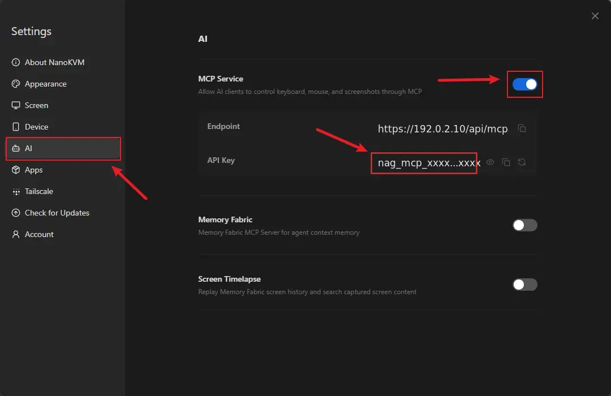
Do not share the MCP API key with others, and do not write real keys into source code or public repositories.
Enable Virtual Audio
Open the NanoKVM Go web interface, go to Settings > Device > Virtual Audio, and enable Virtual Audio. Then check the controlled host's system audio settings and confirm that the NanoKVM Go UAC2 virtual microphone and speaker devices are detected.
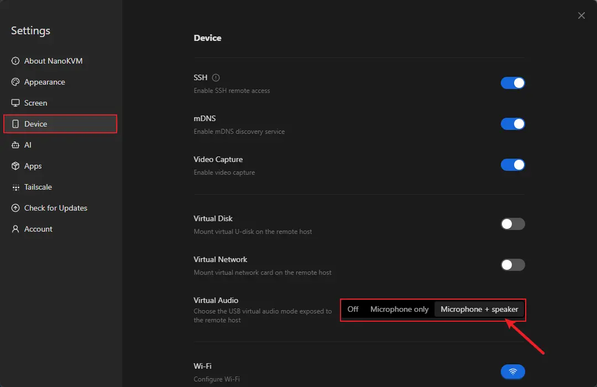
Get Qwen Connection Information
- Open the Alibaba Cloud Model Studio console, register or sign in to an Alibaba Cloud account, and enable Model Studio as prompted.
- Select
China (Beijing). The defaultqwen-audio-3.0-realtime-flashmodel used by Voice Bridge is currently available only in this region.
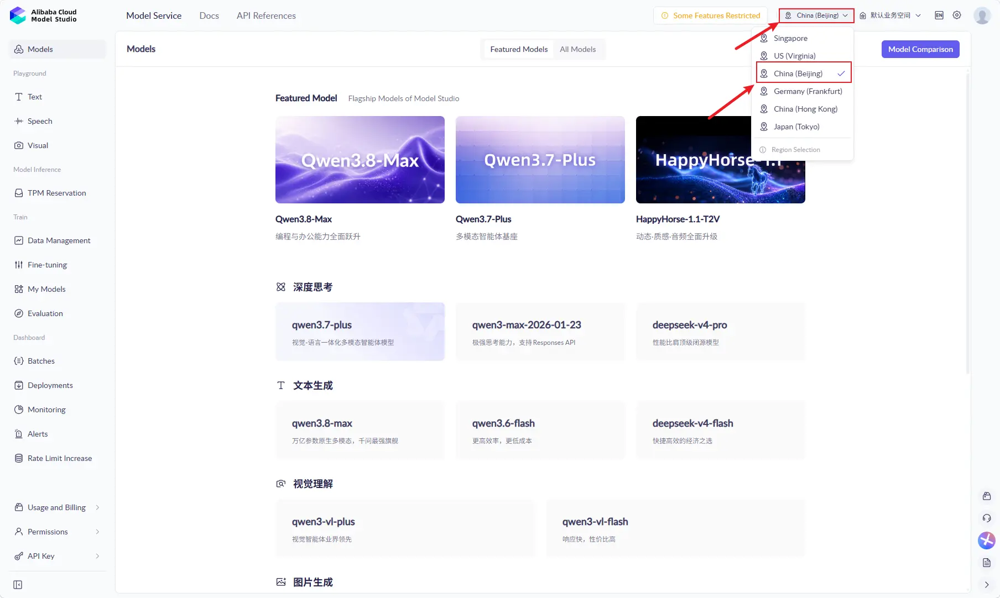
- Open the
API Keypage.
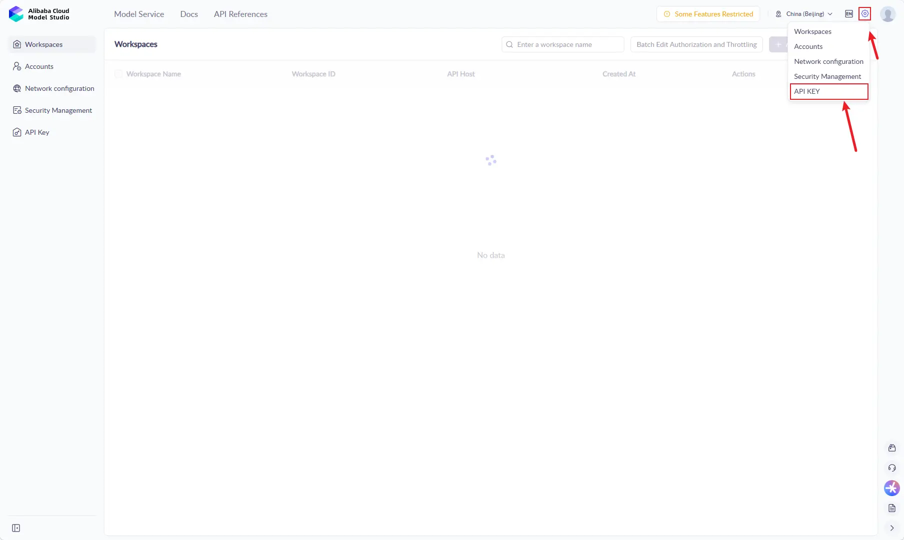
- Create an API key for
Voice Bridge. Copy and save the full key immediately after it is created.
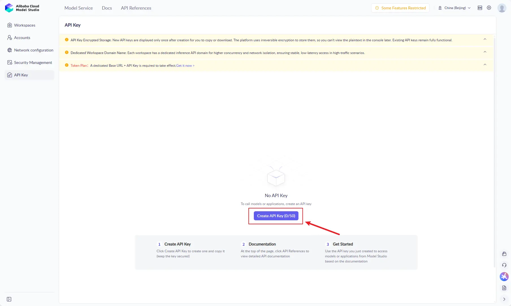
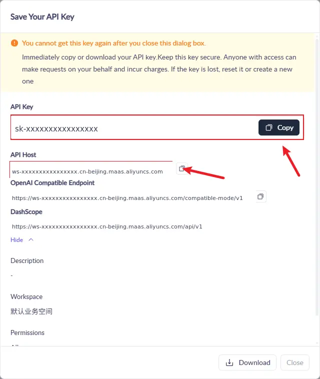
- After the key is created, the page shows an
API Hostvalue. It may be shown as a hostname or as part of a full endpoint URL.QWEN_WORKSPACE_IDis the leadingws-...part of that host, andQWEN_REGIONis the region segment that follows it.
For example:
API Host:
https://ws-xxxxxxxxxxxxxxxx.cn-beijing.maas.aliyuncs.com
In this case, enter the following values:
Qwen Workspace ID: ws-xxxxxxxxxxxxxxxx
Qwen region: cn-beijing
- Confirm the realtime voice model name and supported region in the Model Studio console or the Qwen-Audio Realtime documentation.
When configuring Voice Bridge later, provide or verify these Qwen fields:
Qwen Workspace ID(QWEN_WORKSPACE_ID);Qwen API key(QWEN_API_KEY);Qwen region(QWEN_REGION), which must exactly match the region segment in the API Host.
For the Beijing setup above, Qwen region and Qwen realtime model can keep the App defaults. Always verify that the region matches the API Host before installation.
Available models, regions, quotas, and free usage may vary by account. Use the Model Studio console as the source of truth.
Install and Configure Voice Bridge
Voice Bridge can be installed directly from the built-in Sipeed official App Server on NanoKVM Go. SSH, SCP, apt install, and manual pip install are not required.
- Log in to the NanoKVM Go web interface and open
Settings > Apps > Store. - Select the built-in Sipeed official repository.
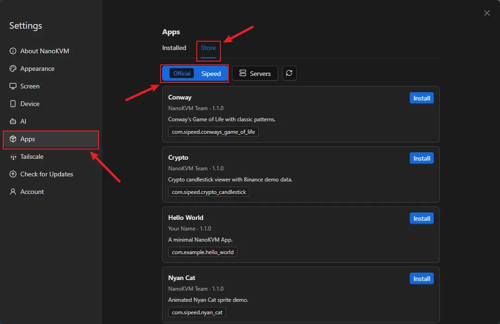
- Find
Voice Bridge, then clickInstall.
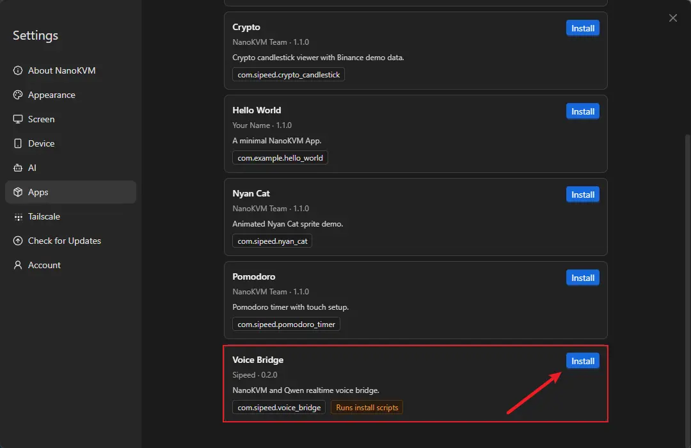
- Wait for the installation configuration window to open.
- Fill in the automatically generated environment form. The web form shows user-facing field names, while the App saves them as environment variables internally. For a first test, fill in
NanoKVM MCP API key,Qwen Workspace ID, andQwen API key. Confirm thatQwen regioniscn-beijing, matching the API Host; the other fields can usually keep their defaults.
| Web form field | Environment variable | Description |
|---|---|---|
Turn detection |
INTERACT_TYPE |
Has a default value. Sets the turn detection mode. Available values include server_vad and smart_turn. |
NanoKVM MCP API key |
NANOKVM_MCP_KEY |
Get it from the NanoKVM Go MCP Service page. |
Qwen API key |
QWEN_API_KEY |
Create it in the Model Studio console. |
Assistant instructions |
QWEN_INSTRUCTIONS |
Has a default value. Sets the assistant identity, response style, and task requirements. |
Base64 instructions |
QWEN_INSTRUCTIONS_B64 |
Optional. Base64-encoded UTF-8 instructions. If set, this overrides regular instructions. Leave it empty for the first test. |
Qwen realtime model |
QWEN_MODEL |
Has a default value. Change it only if your account requires a different available realtime voice model. |
Qwen region |
QWEN_REGION |
Has a default value. For this guide, keep cn-beijing and confirm that it matches the region segment in the API Host. |
Session rotation interval |
QWEN_SESSION_ROTATE_SECONDS |
Has a default value. Sets the interval for rotating the Qwen session. |
Qwen voice |
QWEN_VOICE |
Has a default value. Sets the voice used by model responses. |
Qwen Workspace ID |
QWEN_WORKSPACE_ID |
Get it from the ws-... prefix of the Model Studio API Host. |
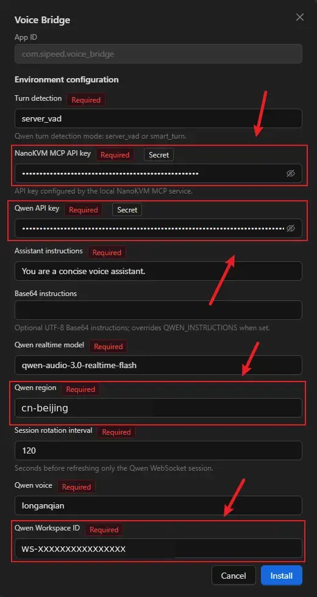
Field names and default values may change with App updates. Use the current environment form and Qwen official documentation as the source of truth.
- After filling in the form, click
Installand keep theInstallation logwindow open until the page shows that installation succeeded.
Voice Bridge automatically installs build dependencies and installs pinned Python dependencies into the App's own python/ directory. The first installation downloads and builds ARM dependencies, so it usually takes several minutes. The log window shows package download, build, and installation progress.
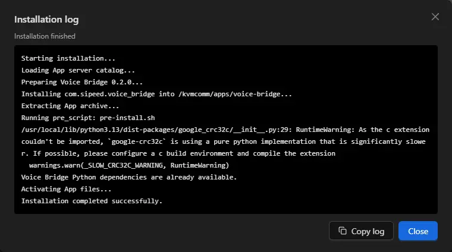
If installation fails, click Copy log, save the full log, and check the end of the log for network, package source, storage, or Python package build errors.
After installation, you can update the Voice Bridge environment configuration from Settings > Apps > Installed. New values take effect the next time the App starts.
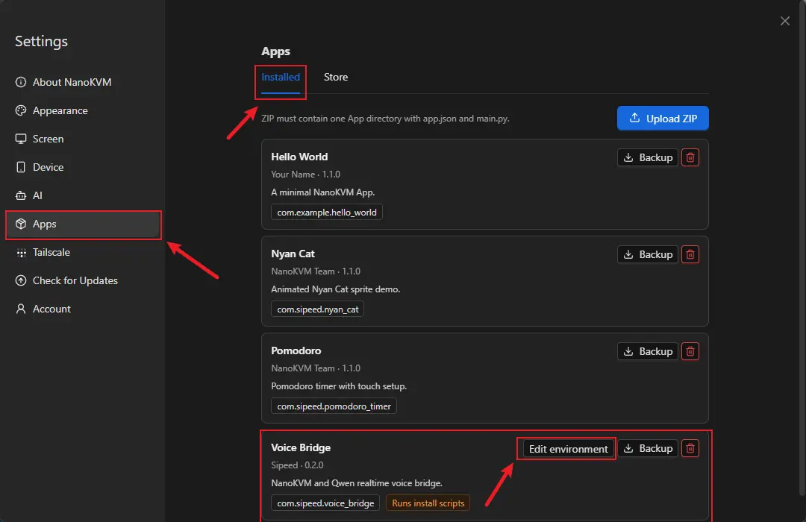
Run and Test
Start the App
- Open the
Appspage on the NanoKVM Go touchscreen. - Select
Voice Bridgeand launch it. - Wait until the App reports that the model and audio connections are ready.
Start a Voice Conversation
- Make a phone call and answer it on the controlled host.
- Speak into the phone.
- Confirm that the NanoKVM Go screen shows the user transcript.
- Wait for Qwen to respond, and confirm that the model transcript appears.
- Confirm that the model voice response is sent back to the phone through the controlled host.
This workflow has been verified with Android phones and iPhones.
FAQ
The Controlled Host Cannot Hear the Model Response
In the controlled host's system audio settings or call software, select the NanoKVM Go UAC2 virtual microphone as the input device, and check that the input is not muted.
The App Does Not Receive Phone Audio
Confirm that the phone call is using USB audio, and select the NanoKVM Go UAC2 virtual speaker in the controlled host's system audio settings or call software. This workflow cannot use DP audio to transfer phone call media.
The App Cannot Connect to Qwen
Check that Qwen API key, Qwen Workspace ID, Qwen region, and Qwen realtime model match, and confirm that NanoKVM Go can access the internet. Model permissions, quota, or rate limits on the account may also cause connection failures.
Configuration Changes Do Not Take Effect
Exit Voice Bridge, save the new configuration from Settings > Apps > Installed, and restart the App. New environment values take effect the next time the App starts.
How to Exit the App
After Voice Bridge exits, it closes the model, WebRTC, and media sessions, and it does not keep playing audio in the background. For the common App exit gesture and management method, see Custom Apps: Exit an App.
Learn More and Customize
The official device-side example source code is in the voice-bridge/ directory of the NanoKVM-Go-Apps main branch. The shared App SDK and development documentation are in the base branch.
If you need to replace Qwen, connect another realtime voice model, or add a knowledge base, Agent, business tools, or custom audio processing, continue with the Realtime Voice Chat Technical Guide.
References: NanoKVM-Go-Apps · Alibaba Cloud Model Studio console · Get an API key · Get a Workspace ID · Qwen Audio Realtime documentation